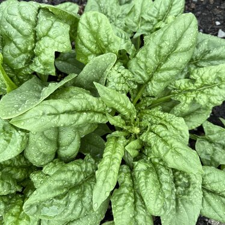
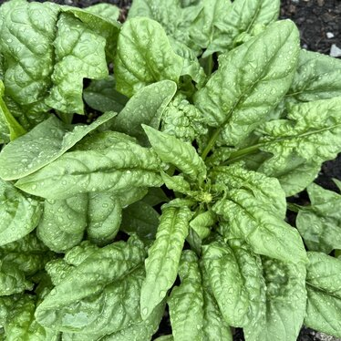

[The Sweet Green recipe 1 cup mixed baby greens (kale and spinach) 1 cup frozen diced celery 1 cup frozen diced cucumber 1/2 cup frozen green grapes 1 Tbs frozen diced ginger 1 tsp liquid stevia 3 cups water (more if a thinner consistency is desired) I buy my ingredients fresh then I wash and prep them before freezing. Freezing these ingredients means I can purchase larger amounts from a wholesaler for a lower cost and use them daily over months rather than buying them fresh in small quantities weekly. I wash and peel the ginger before dicing. For freezing the ginger, I have two solid methods; the first is I measure the diced ginger and fill ice cube trays with one tablespoon per ice cube space, filling to the top with water. After I freeze these ginger ice cubes, I store them in a freezer-safe container. An alternative to this is laying the diced ginger flat on a cookie sheet to freeze on parchment paper. After the diced ginger is frozen, it can be stored in a freezer-safe container. I only buy and prep ginger every six months, so using it daily is not a hassle. With all the ingredients pre-prepped and frozen, this smoothie takes less than five minutes to make. I combine all the ingredients in a blender with water and blend. Blend until smooth, and what you have is a wholesome nutrient and fiber-dense smoothie that will leave you refreshed and energized. ]
 
